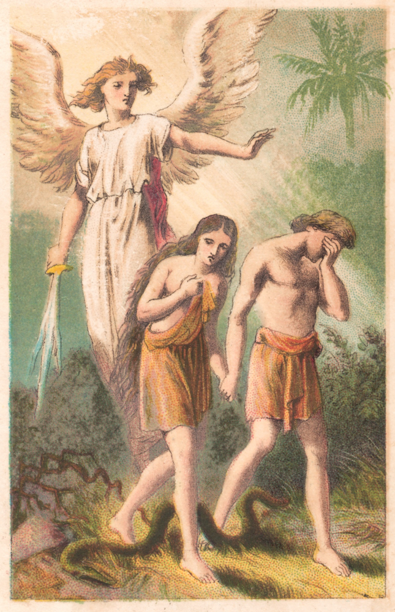

Die Gechichte des Sündenfalls ist vielleicht eine der ersten Erzählungen, die als Tragödie für die ganze Menschheit dargestellt wird. Man muss weder Christ noch religiös sein, um diese weit bekannte Geschichte zu kennen. Schon in der Erzählung der Schöpfung bekommen wir eine Vorahnung ermittelt, dass Desaster gleich um die Ecke liegt, in diesem Fall, nimmt die Gefahr die Form eines Baumes an: Uns wird der Baum der Erkenntnis des Guten und Bösen vorgestellt. Der Baum befand sich in der Mitte des Gartens und war der einzige wovon Adam und Eve nichts essen sollten. Aber eines Tages kommt eine Schlange zu Eve, eine Schlange die lediglich, als „listiger denn alle Tiere auf dem Felde, die Gott der HErr gemacht hatte,” in dem Buch Mose beschrieben wird. Hier ist es erwähneswert zu erklären, dass obwohl Leute diese Schlange im Garten schon als den Teufel identifizieren, wird in der Bibel eine Gleichsetzung zwischen dem Teufel, dem Drache und der Schlange erst im Buch Offenbarung (Revalation) Kapitel 12 Vers 9, und wieder in Offenbarung 20,2 gemacht. Offenbarung wurde viel später geschrieben als das Buch Mose, was auf die Möglichkeit hindeutet, dass die Schlange, zur Zeit der Verfassung dieser Geschichte, nicht unbedingt der Teufel sein musste. Generel tragen Schlangen eine symbolische Bedeutung durch die Erzählungen der Bibel.
Generel hält man diese Geschichte für eine Lehre von der Wichtigkeit des Gehorsams, was auch richtig ist, dennoch kann man in die Erzählung auch tiefer gehen. Es ist in dieser Tiefe, dass wir auf ein Element der Erzählung stoßen, das weniger bekannt ist, also tauchen wir gemeinsam in die Geschichte jetzt ein!
Im Buche Mose 2,16, erwähnt Gott den Baum gleich nachdem er Adam in den Garten gebracht hat: „Und Gott der HErr gebot dem Menschen und sprach: Du sollst essen von allerlei Bäumen im Garten; aber von dem Baum der Erkenntnis des Guten und Bösen sollst du nicht essen; denn welches Tages du davon issest, wirst du des Todes sterben.” Im nächsten Abschnitt erschafft Gott Eve, in dem Übernächsten kreuzen sich schon die Wege der Schlange und Eves. Es ist unklar, ob Eve direkt von Gott oder von Adam über den Baum Bescheid weiß, aber als die Schlange sie anspricht, erklärt Eve: „Wir essen von den Früchten der Bäume im Garten; aber von den Früchten des Baumes mitten im Garten hat Gott gesagt: Esset nicht davon, rühret's auch nicht an, dass ihr nicht sterbet.” Darauf erwidert die Schlange: „Ihr werdet mitnichten des Todes sterben; sondern Gott weiß, dass, welches Tages ihr davon esset, so werden eure Augen aufgetan, und werdet sein wie Gott und wissen, was gut und böse ist.”
Erwähnenswert hier ist, dass Traditionen und Ursprünge auch erklärt werden, ähnlich wie dies in der Entstehungsgeschichte getan wurde. Dieses mal lernen wir z.B. die mythologischen Gründe weswegen Schlangen sich am Boden fortbewegen und Menschen angreifen, Menschen harte Arbeit auf dem Acker leisten, und Frauen Schmerzen bei der Entbindung empfinden müssen. Außerdem wurde Adam und Eve ihre Nacktheit bewusst, nachdem sie die Erkenntnis von Gut und Böse erlangten. Zunächst bekleideten sie sich mit Feigenblättern, aber schließlich machte Gott Röcke von Fellen womit er sie dann kleidete. Diese Elemente der Geschichte haben aber nichts mit der Hauptlehre zu tun; Dazu kommen wir jetzt.
Man kann darüber streiten inwiefern die Schlange Eve anlog als er behauptete, dass man nicht sterben würde, wenn er von dem Baum äße. Was aber keine Lüge der Schlage war, ist dieser Teil seiner Behauptung: „...so werden eure Augen aufgetan, und werdet sein wie Gott und wissen, was gut und böse ist.” Wir wissen, dass das keine Lüge ist, weil Gott selbst im Buche Mose 3,22 sagt: „Siehe, Adam ist geworden wie unsereiner und weiß, was gut und böse ist. Nun aber, dass er nicht ausstrecke seine Hand und breche auch von dem Baum des Lebens und esse und lebe ewiglich!” Daraufhin verbannte Gott Adam und Eve aus dem Garten, sodass sie nicht mehr Zugriff auf den Baum des Lebens hatten, womit sie hätten vermütlich ewig leben können.
Fazit: Die Entstehungsgeschichte spielt mehrere wichtige Rollen: Sie ist unsere Einführung in die faszinierende Welt der Bibel, sie bewundert, macht den Leser neugierig, denn man will wissen, wie die Geschichte weiter geht. Mehr noch stellt sie die Menschen und die Erde in den Mittelpunkt. Die Welt und alles was darin befindet, wurde für uns erschaffen. Wichtige Traditionen und die Grundräson für unsere Existenz werden etabliert. Die Gechichte wird scheinbar aus der Sichtweise einer Person erzählt, die erst viel später existierte, denn es wird auf Konzepte hingewiesen, die für Adam zu der Zeit hätten komplett unbekannt sein müssen; z.B. die Erwähnung des Begriffs „Jahr”, weil es noch kein Jahr gegeben hätte; oder die Erklärung: „Darum wird ein Mann Vater und Mutter verlassen und an seinem Weibe hangen.” Da weder Adam noch Eve zu der Zeit Kinder hätten, wäre das Konzept ihnen noch fremd. Nein, hier geht es, um die Etablierung bzw. Begründung des Ursprungs von Traditionen für neue Leser und Zuhörer der Geschichte. Die Entstehungsgeschichte ist dazu da, um genau diese Leute für die Geschichte und Lektionen der Bibel zu begeistern, und gleichzeitig kulturelle Tradiotionen und Normen zu verfestigen.
Schlusswort: Die Geschichte detailiert nicht weiter, welches Wissen genau erlangt wird, wenn man vom Baum der Erkenntnis des Guten und Bösen isst, also müssen wir annehmen, dass das Wissen sich auf die bloße Erkenntnis des Guten und Bösen beschränkt ist; eine Erkenntnis die Gott und seine zu dem Zeitpunkt noch nicht spezifierten Begleiter (vielleicht Cheribum bzw. Kinder Gottes) besassen. Wenn Gott und andere Himmelswesen diese Erkenntnis besitzen konnten und trotzdem edel bleiben, können wir daraus schließen, dass jene Erkenntnis zu besitzen einen Menschen nicht zwingend zu Sünder machen musste. Sicher missfiel es Gott, dass es bei seinen Geschöpfen an Gehorsam fehlte, aber seine Hauptsorge ist in dieser biblischen Gechichte klar: die Erkenntnis welche Adam und Eve erlangten. In diesem Kontext wäre diese Geschichte eher eine Lehre von verbotem Wissen, denn allein die Tatsache, dass Adam und Eve Wissen hatten, was sie nicht haben dürfen, war Grund genug, sie aus dem Garten zu sperren und sie vom ewigen Leben abzuschneiden.